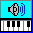

Classical Piano Music |
Choir Music |
Vocal Solo Music |
Musical Theatre
Christmas Carols |
Canadian Contemporary Music Festival |
Update History
|
Sign My Guestbook
View My Guestbook
View the Update History (Last updated: June 08, 2001)
|
| Noteworthy Composer (NWC) is a shareware music notation program that lets you enter songs in music notation format, print them, and play them back. It also imports and exports MIDI files. It costs about $39 US, and in my opinion is an excellent value. All the songs on this page were created using this program. | |
 |
Noteworthy Player is a free version of the program that can read and play back music composed in NWC. It can also play back MIDI files, displaying the notation as the music plays. For NWC files, this means you can see the lyrics as the song plays! Download it and see for yourself. |
The following piano pieces are arranged in decreasing order of difficulty. Some are the full version, some are simplified adaptations. Playback for these pieces is optimised for the Yamaha Software XSG Driver, so it might sound different on another sound card or software synth setting. [Collected in piano.zip]
| SONG DESCRIPTION | NWC File | MIDI File |
|---|---|---|
| Ludwig van Beethoven: Piano Sonata no. 8 in C minor, op. 13 "Pathétique". All three movements are presented here, with printable scores that include piano fingering. Originally adapted from the Midi file obtained from The Classical MIDI Archives, but totally re-written to take advantage of NWC 1.70 capabilities. |
Pathetique_1.nwc Pathetique_2.nwc Pathetique_3.nwc |
Pathetique_1.mid Pathetique_2.mid Pathetique_3.mid |
| Ludwig van Beethoven: Für Elise. This full version has a good quality printout and (I think) really good playback. Makes use of the Boxmarks Font. | FurElise.nwc | FurElise.mid |
| . | . | . |
| Frederic Chopin: Waltz in A minor (1829). The full version with proper dynamics and a nice printout. This piece can be played by an intermediate piano student. Originally adapted from The Chopin Midi Library. Compare this with my version. If you know where I can get a CD with this on it, please let me know. | ChopinWaltz.nwc | ChopinWaltz.mid |
| Frederic Chopin: Prélude (Opus 28, nos. 4, 6 and 7). These pieces are from Chopin's "24 Préludes", Opus 28. The MIDI files in The Chopin Midi Library are way better than those in Classical Midi Archives Chopin Page. Compare them with mine. These NWC files require the Crescendo Font to properly display hairpin crescendo symbols. |
ChopinPrelude28_4.nwc ChopinPrelude28_6.nwc ChopinPrelude28_7.nwc |
ChopinPrelude28_4.mid ChopinPrelude28_6.mid ChopinPrelude28_7.mid |
| Frederic Chopin: The following are two incomplete versions of his Nocturnes - Nocturne Op. 9, No. 2 and Nocturne Op. 72, No. 1, which I hope to complete someday. Why is it that the only three nocturnes I really like are the first three he wrote: Op. 72 (written in 1827 but published posthumously) and Op. 9 Nos. 1 & 2? |
ChopinNocturne72_1.nwc ChopinNocturne9_2.nwc |
N/A |
| . | . | . |
| W. A. Mozart: Piano Sonata no. 11 in A major (K331) Andante grazio. This piece includes only the theme and first variation. | MozartSonata_K331.nwc | MozartSonata_Amaj_K331.mid |
| W. A. Mozart: Piano Sonata no. 12 in F major (K332) Adagio, second movement. In my opinion this is the most beautiful Mozart piano piece. | MozartSonata_K332_Adagio.nwc | MozartSonata_K332_Adagio.mid |
| W. A. Mozart: Piano Sonata no. 15 in C major (K545) Allegro. This is the first movement of this piece. | MozartSonata15_K545.nwc | (not available yet) |
| . | . | . |
| Johann Sebastian Bach: Two-part Invention for the Piano, No. 13. This piece has the mathematical beauty of flowing chord changes and alternating voices, and also sounds wonderful. One of my favorites, and not too hard to play. | BachInvention13.nwc | BachInvention13.mid |
| Johann Sebastian Bach: Jesu Joy of Man's Desiring. Simplified version for the intermediate piano student. | JesuJoy.nwc | JesuJoy.mid |
| . | . | . |
| Muzio Clementi: Sonatina - Op. 36, No. 1. This is the first part (Spiritoso) of this popular work. Midi files for the full set of Clementi sonatinas may be found at The Classical Midi Archives. | ClementiSonatina36_1a.nwc | ClementiSonatina36_1a.mid |
| Muzio Clementi: Sonatina - Op. 36, No. 2. The first and third parts are included here. |
ClementiSonatina36_2a.nwc ClementiSonatina36_2c.nwc |
ClementiSonatina36_2a.mid ClementiSonatina36_2c.mid |
| Carl Czerny: Study Opus 139, No. 86. | Czerny139_86.nwc | N/A |
| Brian's Song from the television movie. Its a nice intermediate piece to play. | Brian.nwc | N/A |
| Pachelbel's Canon. Two different simplified versions - a shorter one in D (the original key), and a longer (and better) one in C. |
Pachelbel.nwc Pachelbel_inC.nwc |
Pachelbel.mid Pachelbel_inC.mid |
| Theme Song from "Titanic". Simplified version for the intermediate piano student. Includes lyrics. | Titanic.nwc | Titanic.mid |
These are songs I transcribed for a local choir. They are intended for printout, but the first five have a piano accompaniment, so they sound better when played. [Collected in choir.zip]
| SONG DESCRIPTION | NWC File | MIDI File |
|---|---|---|
| A la Rurru Nino - a Spanish lullaby, arr. Michael Neaum. 3 voices plus piano accompaniment. | RurroNino.nwc | RurroNino.mid |
| May the Lord Bless You and Keep You - a classic hymn by John Rutter. 2 voices plus piano. This song is also on the Noteworthy Composer Scriptorium. | LordBless.nwc | LordBless.mid |
| Rise Again - Leon Dubinsky, arr. Valerie Long. 3 voices plus *NEW* piano accompaniment. | RiseAgain.nwc | RiseAgain.mid |
| O Valiant Hearts - Gustav Holst. 2 piano voices with bass accompaniment. | OValiantHearts.nwc | OValiantHearts.mid |
| I Vow to Thee, My Country - Gustav Holst. Piano accompaniment only. | VowCountry.nwc | VowCountry.mid |
| Dance, Dance, Dance - Eastern European folksong by Mary Donnelly. 3 voices. | DanceDance.nwc | DanceDance.mid |
| Niska Banja - Serbian Gypsy Dance, arranged by Nick Page. 4 voices. | NiskaBanja.nwc | NiskaBanja.mid |
| The Rhythm of Life - Dorothy Fields, Cy Coleman. 3 voices. | RhythmOfLife.nwc | RhythmOfLife.mid |
| Old Joe Clark - arranged by Mary Goetze. 3 voices. | OldJoeClark.nwc | OldJoeClark.mid |
| Younger Generation - Ira Gershwin, Aaron Copland. 2 voices. | YoungerGeneration.nwc | YoungerGeneration.mid |
| A Great Big Sea - A Newfoundland folk song. One voice, no accompaniment. Uses the Boxmarks Font once, at the end. You can download the font from the link and install it. | GreatBigSea.nwc | GreatBigSea.mid |
| Didn't Ma Lawd Deliver Daniel - A Negro Spiritual. Three voices, no accompaniment. Uses the Boxmarks Font in a very few places. | DeliverDaniel.nwc | DeliverDaniel.mid |
| Lord, At All Times - A hymn by Felix Mendelssohn, arranged by Wallace Gillman. Three voices, no accompaniment. | LordAtAllTimes.nwc | LordAtAllTimes.mid |
Most of these songs were transcribed from 2nd edition (Fall 1998) of the Songbook Series (books 4, 5 and 6) published by the Royal Conservatory of Music. Each song has a piano accompaniment with a flute melody line. [Collected in voice.zip]
Note: These songs are intended to be used for accompanying a singer during practice sessions when a pianist is not available. They are also useful in singing lessons when the teacher would rather focus on the student than on playing the piano. In Noteworthy Composer the melody line can be muted for a more authentic accompaniment. I do not belive that making this material available will cause anyone to not purchase the very reasonably priced songbooks.
| SONG DESCRIPTION | NWC File | MIDI File |
|---|---|---|
| An den Mond (To the Moon) - Franz Schubert (1797-1828) | ToTheMoon.nwc | ToTheMoon.mid |
| Frühlingslied (Spring Song) - Franz Schubert (1797-1828) | SpringSong.nwc | SpringSong.mid |
| An die Nachtigall (To the Nightingale) - Franz Schubert (1797-1828) | ToTheNightingale.nwc | ToTheNightingale.mid |
| An Den Sonnenschein (To the Sunshine) - Words: Robert Reinick (1805-1852) Music: Robert Schumann (1810-1856) | ToTheSunshine.nwc | ToTheSunshine.mid |
| The Wish - Fryderyk Chopin. This is set in the key of A (as in the older version) rather than B (in the current version). | TheWish.nwc | TheWish.mid |
| No Quiero Casarme - Traditional Spanish | NoQuieroCasarme.nwc | NoQuieroCasarme.mid |
| Motherless Child - American Negro Spiritual | MotherlessChild.nwc | MotherlessChild.mid |
| Turn Ye To Me - Traditional Scottish, arr. Evelyn Sharpe (note: this is a better arrangement than that in the Songbook) | TurnYeToMe.nwc | TurnYeToMe.mid |
| When Love is Kind - English folk melody, arranged by A. Lehmann. | WhenLoveIsKind.nwc | WhenLoveIsKind.mid |
| With a Primrose - Norwegian folk song. Music: Edvard Grieg (1843-1907), Lyrics: John O. Paulsen (1851-1924) | WithAPrimrose.nwc | WithAPrimrose.mid |
| The Owls - Peter Jenkyns | TheOwls.nwc | TheOwls.mid |
| Chanson de Florian - Benjamin Godard | ChansonDeFlorian.nwc | ChansonDeFlorian.mid |
| Baruch Hamakom - Srul Irving Glick. Translation: Blessed be the omnipresent, blessed is he, blessed is he who gave the Torah to his people Israel. | Baruch.nwc | Baruch.mid |
| Orpheus with his Lute - Lyrics by William Shakespeare, music by Ralph Vaughan Williams | Orpheus.nwc | Orpheus.mid |
| Solo extract from Kyrie Eleison - Franz Schubert (1797-1828) | KyrieEleison.nwc | KyrieEleison.mid |
| Ave Maria - Johann Sebastian Bach (not from the Songbook) | AveMaria_Bach.nwc | AveMaria_Bach.mid |
| Think of Me - from Phantom of the Opera. This song was re-arranged for use in a memorial service. | ThinkOfMe.nwc | ThinkOfMe.mid |
This is a selection of musical theatre pieces that I have transcribed. They each have a piano accompaniment, with most of them having a melody line played by a flute. [Collected in theatre.zip]
| SONG DESCRIPTION | NWC File | MIDI File |
|---|---|---|
| I Should Have Danced All Night - from My Fair Lady. The score was recently improved using the Noteworthy 1.55 staff layering facility. | DancedAllNight.nwc | DancedAllNight.mid |
| Far From the Home I Love - from Fiddler on the Roof | FarFromTheHome.nwc | FarFromTheHome.mid |
| Sunrise, Sunset - from Fiddler on the Roof | SunriseSunset.nwc | SunriseSunset.mid |
| I Feel Pretty - from West Side Story | FeelPretty.nwc | FeelPretty.mid |
| Little Lamb - from Gypsy | LittleLamb.nwc | LittleLamb.mid |
| I Dreamed a Dream - from Les Miserables. Now finished! This score takes full advantage of Noteworthy's staff layering feature. | DreamedADream.nwc | DreamedADream.mid |
| On My Own - from Les Miserables. (this link does a nice job of telling the story.) | OnMyOwn.nwc | OnMyOwn.mid |
| Bring Him Home - from Les Miserables. Beautiful solo sung by Jean Valjean. | BringHimHome.nwc | BringHimHome.mid |
| Memories - from Cats, by Andrew Lloyd Webber | Memory.nwc | Memory.mid |
| Don't Cry for Me Argentina - from Evita, by Andrew Lloyd Webber | Argentina.nwc | Argentina.mid |
| Wish You Were Here - from the 1952 musical "Wish You Were Here". Words and music by Harold Rome. The printout quality is not the best. | WishYouWereHere.nwc | WishYouWereHere.mid |
| Comedy Tonight - from the 1962 musical A Funny Thing Happened on the way to the Forum. Words and music by Stephen Sondheim. Again, not the best printout. | ComedyTonight.nwc | ComedyTonight.mid |
| Giants in the Sky - From the musical Into the Woods, by Stephen Sondheim. This only has a melody line. | GiantsInTheSky.nwc | GiantsInTheSky.mid |
Here are a few Christmas carols [Collected in christmas.zip]
| SONG DESCRIPTION | NWC File | MIDI File |
|---|---|---|
| O Holy NightThis arrangment is relatively easy to play. If you know a better one, let me know. | OHolyNight.nwc | OHolyNight.mid |
| The Coventry Carol This is a very simple arangement. | CoventryCarol.nwc | CoventryCarol.mid |
| O Little Town of Bethlehem I love this beautiful arangement. | Bethlehem.nwc | Bethlehem.mid |
These songs are Canadian compositions that are eligible for the Canadian Contemporary Music Festival held each fall, sponsored by the Canadian Music Center. [Collected in canadian.zip]
| SONG DESCRIPTION | NWC File | MIDI File |
|---|---|---|
| Beautiful - From the Grade 4 songbook. Music by Chester Duncan, words by Margaret Hood. | Beautiful.nwc | Beautiful.mid |
| Trolls - From the Grade 4 songbook. Words and music by Clifford Crawley. | Trolls.nwc | Trolls.mid |
| I'll Give My Love an Apple - Traditional Canadian folk song, arranged by Godfrey Ridout. | GiveMyLoveAnApple.nwc | GiveMyLoveAnApple.mid | The Genius - Robert Fleming. Now found in the Grade 6 songbook. | TheGenius.nwc | TheGenius.mid |
| Sarum Primer - Chester Duncan. Words composed in 1558. Transcribed from a copy of the handwritten score. | SarumPrimer.nwc | SarumPrimer.mid |
| First Snow - Violet Archer. Transcribed from a copy of the handwritten score. | FirstSnow.nwc | FirstSnow.mid |
| June 08 2001 | Added Bach's Invention No. 13 |
| June 06 2001 | The files on this page used to be hosted by AcmeCity, which has been shut down. (You get what you pay for.) I am in the process of transferring the files to Rogers@Home, which I do pay for, therefore should hopefully stick around for a while. |
| June 17 2000 | Added some Mozart piano sonatas. |
| Mar 05 2000 | Added three of Chopin's 24 Préludes. |
| Feb 07 2000 | New Sonatinas by Muzio Clementi - Op. 36, no. 1 and 2. |
| Jan 09 2000 | Many new songs have been added, including all three movements of Beethoven's Pathetique piano concerto. These songs all use the new NWC 1.70 Beta release. |
| Jun 20 1999 | This page now provides direct access to NWC files! No more unpacking ZIP files just to look at a song. Unfortunately, this only works for Internet Explorer users. |
| Jun 20 1999 | Added "When Love is Kind" (folk song), plus "Jesu Joy of Man's Desiring" and Pachelbel's Canon. |
| May 16 1999 | Added "Bring Him Home" (from Les Miserables), "With a Primrose" and "I'll Give My Love an Apple". |
| Mar 29 1999 | Added "Fur Elise". |
| Jan 09 1999 | Three new choir songs. |
| Dec 31 1998 | Added "An Den Sonnenschein" and "Little Lamb". |
| Nov 13 1998 | Added "No Quiero Casarme". |
| Nov 02 1998 | Added 2 Gustav Holst songs, plus "O Holy Night". |
| Sep 29 1998 | Added "Trolls" and "Spring Song"; Schubert songs now have German lyrics. "Rise Again" has piano accompaniment. |
| Sep 09 1998 | "I Dreamed a Dream" is now complete. |